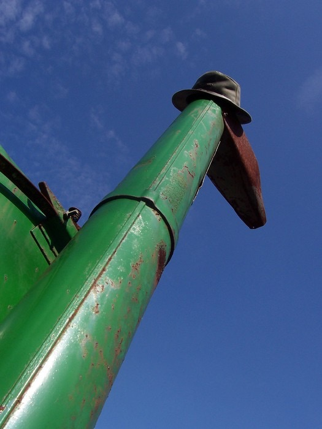
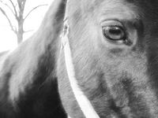
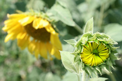
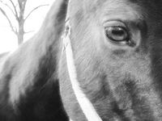
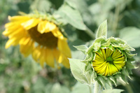

Next Photo
-
Vote
Augerasaurous
This grain auger shows off it's style with a hat. The green red and blue contrast each other while the puffy clouds contrast the hard metal of the auger.
More...
Title: Augerasaurous
Description: This grain auger shows off it's style with a hat. The green red and blue contrast each other while the puffy clouds contrast the hard metal of the auger.
Keywords: auger hat
Hidden: n
Date added: Sat Mar 04 17:16:48 CST 2006
Date taken: Sun Mar 27 12:30:36 CST 2005
Camera: EASTMAN KODAK COMPANY.KODAK CX6330 ZOOM DIGITAL CAMERA.
Resolution: 1524x2032
Mode:
Shutter speed: 95/10
Flash: 16
Exposure time: 1/750
Iso:
Metering: 5
Aperture: 5/1
Focal length: 56/10
Artist: NathanielGuy Mahieu
Copyright: 2006 NathanielGuy Mahieu
Views: 1284
 


